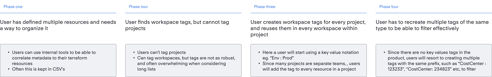

Providing accurate cost tracking and Fin-ops through key value tags

HashiCorp
Q2 2024
Lead Product Designer, Researcher
Figma, Snowflake, CommandAI
The current implementation of workspace tags within HCP Terraform doesn’t match the mental model of our large customers.
Terraform Cloud supports “Tags” both in the product and as an object in the Terraform configuration's cloud block. Tags were introduced to help users organize, correlate, and filter Workspaces—the core resource in Terraform Cloud. However, the current single-value tag format is limited. While it's useful for basic filtering (as appreciated by app developers, it doesn't meet the more advanced needs of platform engineers, who manage infrastructure at scale. To understand this gap, let’s explore the platform engineer’s journey and where the current tagging system falls short.

Current usage of workspace tags suggest desire for key value schema and inheritance down the resource hierarchy.
Tags generally fall into two categories: user-defined (added by app developers) and administrative (added by platform engineers). Administrative tags often use key-value pairs to organize resources more effectively. However, Terraform Cloud didn’t natively support key-value tagging, leading users to hack around it by embedding delimiters like ":" or "=" in single-value tags. In fact, 36% of all tags contained such delimiters, highlighting the clear need for proper support.


Our user research was lean and effective in identifying a problem statement to work with.
To begin we had to ascertain exactly what the user need is here. We knew that generally there was demand for this type of tag, and that users were hacking their way around the current implementation, but we didn’t know exactly how users were setting up tags in their organization.
To approach this, my PM and I engaged with 4 different customers who expressed interest in this sort of thing. We focused on specifically the platform engineer persona that I mentioned before, as they were the persona type that was the least served by the current model.
Tags as a concept is ineffective in allowing customers to perform more administrative tasks, such as managing billing, audit, and RBAC. The current implementation is too permissive, meaning anyone can add or remove tags, and a tag itself cannot be added at a project level. This causes the customer to have to more manual busy work on their end to maintain a system of record of internal metadata to keep up.
Our long term goal was to increase confidence in resource consumption.
With administrative tags, customers should in theory be able to consume their contract entitlements with greater confidence.
20% Feature Adoption
General Goal
+% consumption of contract
Long Term Goal
-75% Workspace Tag Usage
Migration Indicator
Tag Binding
Challenge: We need to provide the affordance of both predefined tags, and arbitrary tagging.
Decision: Use fields with smart suggestions, as testing showed that power-select component biased users towards pre-existing tags.


Tag inheritance & resource hierarchy
Challenge: We do not want to overtly bias users towards overriding tags, but also do not want to not present the affordance of overridability.
Decision: Visually separate inherited tags, but shorten view through grid of tags, as there tends to be many inherited tag per project, and often non-overridable.x

Tag filtering and organization
Challenge: We did not store the key and value of all tags in a user’s organization, which made traditional tag filtering patterns unusable (dropdowns)>
Decision: The metaphor that matched the most was akin to a query, so the design reflected that. A user would search for a tag and then a list of resources that match that tag would return.

Mental model issues with naming
Challenge: We could not fully deprecate old workspace tags without breaking compatibility guarantees, but having two “tags” with different names felt like we were offloading the complexity of our internal implementation to the user.
Decision: Soft deprecate tag type by removing action through UI, ensuring higher adoption of new tag type

The complete end to end journey from tag creation to binding.
Large customers have indicated increased confidence in RUM usage.
Additionally, design patterns have been adopted by other HashiCorp platform design team, and used in 4 new products.
22% Feature Adoption
General Goal
450+ customers onboarded
Long Term Goal
Workspace tags down 87%
Migration Indicator
Perceived "utility features" have large scale implications on how customers structure their organizations, and are absolutely necessary to creating enterprise ready solutions.
Adding tags might seem straightforward, but it turned into a months-long effort due to complex cross-team discussions about how tagging should work across all HashiCorp Cloud products—not just Terraform. This delayed timelines and limited scope, but ultimately led to a more robust solution. The biggest skill I developed was learning to navigate the tensions within an EPD structure. The project was at risk, and while cutting corners seemed tempting, I learned to choose my battles—balancing advocacy for a better experience with pragmatic delivery. It’s not something you learn in school, so it was valuable hands-on growth.